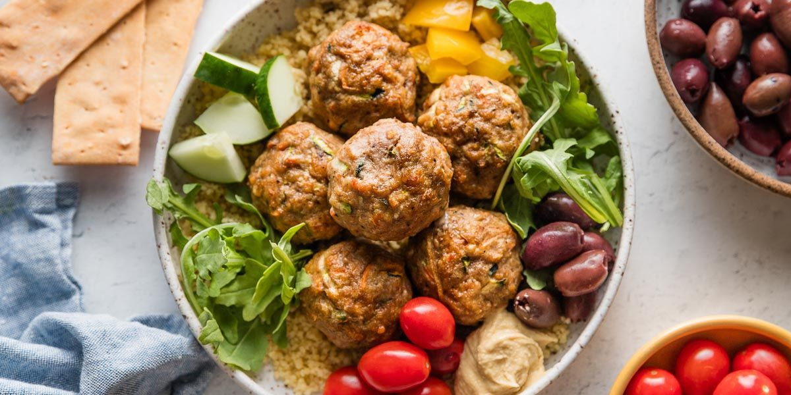

Turkey Meatballs in Tomato Sauce

- Meal
- Dinner
- Serves
- 6
- Protein
- turkey
- Cook
- oven · 20 min active / 45 min total · easy
- Make-ahead / leftovers
- yes / yes
- Mediterranean
- yes
- WW tier
- light
- Status
- Trying out (probation)
A lighter version of the Spaghetti & Meatballs night — swaps beef for turkey and bakes instead of frying. Hits the tomato quota.
Ingredients
Meatballs
- 1.5 lb ground turkey
- 1/3 cup breadcrumbs
- 1 egg
- 2 cloves garlic, minced
- 1 teaspoon Italian seasoning
- Salt and pepper
Sauce
- 1 jar marinara (look for one with olive oil, not seed oil)
- Or 1 can crushed tomatoes + Italian seasoning + garlic
Method
- Mix meatball ingredients, roll into balls (about 1.5").
- Bake at 400°F for 20–25 minutes.
- Pour sauce over meatballs and return to oven for 5–10 minutes, or simmer in sauce on the stovetop.
- Serve over pasta or with crusty bread.
Notes
- Make a double batch, freeze half — one of the better freezer-meal investments.
- Pairs with Spaghetti & Meatballs rotating on alternate tomato nights.
- Ground turkey is cheaper than beef; Aldi usually has good prices.